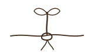
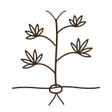
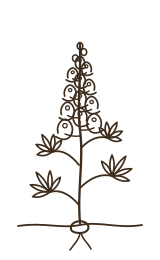
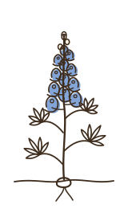

Election money built a moment. Seed money builds what lasts.
I'm looking for ten people to put $25,000 behind Texas Voter Project, so we can stop starting over every cycle and build the civic infrastructure young Texans deserve.

Less than three months of funding. Over 500 real relationships.
This fall, TVP received $20,000 in grants earmarked for the election. In under three months, we turned it into trivia nights, bar crawls, dog-friendly polling pop-ups, run clubs and a voter festival, and built over 500 real relationships along the way. We're matching sign-ins against the voter file now, and we expect the turnout number to make us proud.
Our events are intentional. The young Texans we reach are skeptical of formal political institutions and don't usually show up for political organizations, so trust comes first. Some signed in, some follow us on Instagram, and some just keep coming back with friends. That's over 500 real relationships, and the start of a network. Imagine what it becomes with a real staff behind it.
Every dollar was tied to the election, and none of it could go toward the tools, travel or staff it takes to run a nonprofit. On November 4, the funding ended. The relationships didn't, and neither did the work.
In good company: the partners and coalitions we built this fall with, including the Texas Election Protection coalition
- Texas Youth Power Alliance
- Joy Resistance Network
- Radical Registrars
- Este Poder
- Commission Shift
- When We All Vote
- Civitech
- SEAT
- Dogland
- Body Art Run Club
- Shelton Art Co
- Deeds Not Words
- Center for Artistic Activism
- San Antonio Area Foundation
- Planned Parenthood Advocates of Texas
- The Flock
- Jolt
- Grita Canta Vota
- Texas Civil Rights Project
- Common Cause Texas
- League of Women Voters of Texas
- MOVE Texas
- Mi Familia Vota
- SAAVE TX Education Fund
- Poder Latinx
- URGE
- ACLU of Texas
- Texas Freedom Network
- Texas Impact
- Workers Defense Project
- United We Dream
- LUPE
- Voces Unidas RGV
- Asian Texans for Justice
- AALDEF
- NAACP Legal Defense Fund
- NALEO Educational Fund
- Campaign Legal Center
- Lawyers' Committee for Civil Rights Under Law
- VoteRiders
- Black Voters Matter Fund
- Disability Rights Texas
- Houston in Action
- Houston Area Urban League
- Arise Adelante
- LEAD Filipino
- Laredo Immigrant Alliance
- Interfaith Welcome Coalition
- Somos Tejas
- ActiVote
- SEIU Texas
- Indivisible
- Common Defense
- Local Progress

Turnout is what you see on Election Day. The power behind it gets built in the off years.
Election Day gets the attention. The real work is slower and longer: building social capital, civic infrastructure and lasting civic power among young Texans in the off cycle, when no one is paying for it. That's when trust gets built with neighbors, with newly elected leaders, and with the institutions that are supposed to answer to us.

It costs money to raise money.
No one expects a startup to build its product, pay for its own pitch meetings and fund its first hires out of its first customer's order. A new nonprofit is a startup too, and it needs seed capital for the same reasons.
We are absolutely going after grants, and we'll keep winning them. But every grant TVP received this year was for program spending only. None of it can keep the lights on between cycles.
I've never drawn a paycheck from TVP. The travel, the lunch meetings and the conferences that earn a foundation's trust have all gone on my personal credit card, including every conference I've attended this year. I can't keep building this on debt.
Flexible money pays for the tools, the travel and the people that bring in larger, multi-year grants. Every seed dollar is built to bring more dollars in after it.
Backbone first. Salaries once the floor is solid.
Seed funds don't go to salaries until the fund reaches our Stage 1 goal of $190,000. Until then, every dollar goes into the backbone a brand-new nonprofit needs:
- Organizing and data tools like Qomon and RunningMate
- Grant research through Instrumentl
- Travel to the conferences and convenings where funders meet new organizations
- Dinners and meetings with partners and supporters
- The everyday systems that make an organization credible
A fundraising consultant who brings in the grants, so seed money grows into a sustainable budget.
Communications is the piece I can't cover alone, and consistent communication is how a young organization earns its legitimacy.

This is where funders and partners decide who they trust.
When we say travel, we mean these rooms. They're where national funders, coalition partners and peer organizations meet new groups, and where a young Texas organization either gets known or gets overlooked. Here are the conferences and convenings we're working to be in the room for, and the list keeps growing.

From Stage 0 to statewide.
There's no building to rent. Nearly every dollar goes to people building trust with other people.
Election-only grants, fall 2026
- 5 voter registration events
- 10 Pups to the Polls pop-ups
- 5 community events
- 1 large early-voting festival, Voter Fest
Never paid for
- Executive Director salary: $0
- Tools, travel and operations: $17,885 in 2026 that no grant could cover, mostly on my credit card
A real team in Austin
- Executive Director salary
- Part-time development director
- Part-time communications
- Tools, travel and operations
Consistent voice, a second city
- Executive Director salary
- Part-time development director
- Full-time communications director
- Part-time organizer in a second city
- Tools, travel and operations
Organizers across Texas
- Executive Director salary
- Part-time development director
- Full-time communications director
- Full-time organizers in San Antonio, Houston and the Rio Grande Valley
- Tools, travel and operations

Ten people. $25,000 each.
Ten founding seed funders fully funds Stage 1 and puts us well on the way to Stage 2: a paid team, a development director bringing in grants, consistent communications, and a path to our first organizer outside Austin. That's a real organization, ready to compete for the multi-year funding that sustains it.
I'll be straight with you. Without it, I'll have to step back and go do this work the way it's always been done, inside an institution where it's safe. I don't think Texas needs more of the same, and the more than 500 people who showed up this fall tell me they don't either. I'd much rather build the new thing with you.
Every seed gift builds the backbone.
Keeps our voter data tool running for about three months, so we can keep inviting new people in.
Covers a year of the organizing and fundraising systems that track every relationship from first event to lifelong volunteer.
Funds about five months of our development director, the hire whose whole job is turning seed money into grants.
Founding Seed Funder. One of the ten people who take TVP from a founder-funded project to a staffed organization.
Prefer to give by check, wire or DAF, or want to talk first? See other ways to give or email sophia@texasvoterproject.org.
Texas Voter Project is a fiscally sponsored project of Future Incubator, a 501(c)(3) (EIN 33-3913132). Gifts are tax-deductible to the extent allowed by law.